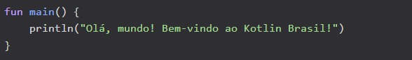
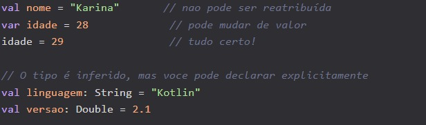
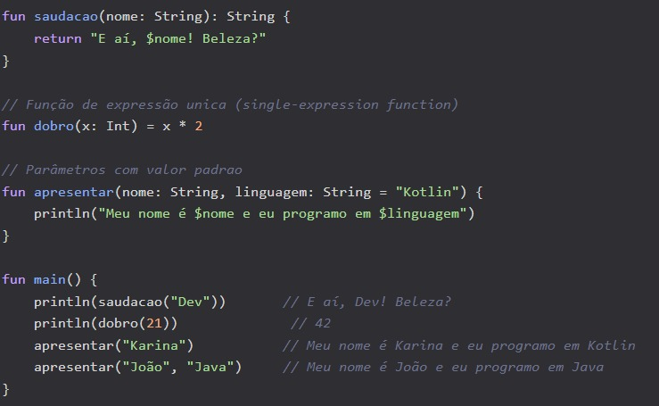
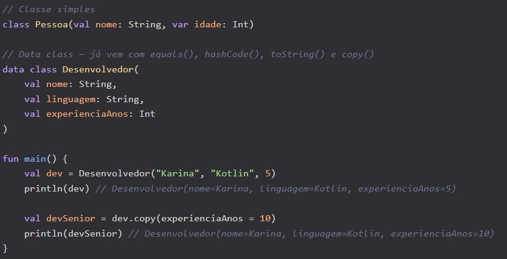
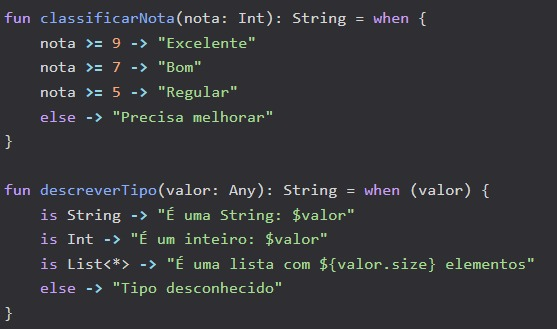

O que É Kotlin?
Kotlin é uma linguagem de programação criada pela JetBrains (a mesma empresa por trás do IntelliJ IDEA) e lançada oficialmente em 2016. Desde 2019, o Google a considera a linguagem preferencial para desenvolvimento Android, e desde então ela só cresceu.
Kotlin roda na JVM (Java Virtual Machine), o que significa que ela é 100% interoperável com Java. Mas não para por aí: Kotlin também compila para JavaScript e código nativo, graças ao Kotlin Multiplatform
Por que Kotlin está tão popular?
A resposta é simples: produtividade. Kotlin foi projetada para resolver as dores de cabeça que os desenvolvedores Java enfrentam há anos. Código verboso, NullPointerException, boilerplate excessivo — tudo isso fica no passado com Kotlin.
Alguns pontos que fazem Kotlin brilhar:
1. Sintaxe concisa: você escreve menos código pra fazer a mesma coisa;
2. Null Safety: o compilador te protege de erros com nulo;
3. Interoperabilidade com Java: dá pra usar qualquer biblioteca Java;
4. Coroutines: programação assíncrona sem dor de cabeça;
5. Multiplataforma: um só código pra Android, iOS, web e backend.
Seu primeiro programa em Kotlin
Vamos ao que interessa: código! O clássico “Hello, World!” em Kotlin é assim:

Repare que não precisa de classe, não precisa de public static void main(String[] args). Direto ao ponto.
Variáveis em Kotlin
Kotlin tem dois tipos de variáveis: val (imutável) e var (mutável).

A dica é: prefira val sempre que possível. Imutabilidade torna seu código mais previsível e seguro.
Funções em Kotlin
Declarar funções em Kotlin é bem direto:

Percebeu o $nome dentro da string? Isso é string template, e é uma mão na roda!
Classes e Data Classes
Em Kotlin, criar classes é muito mais enxuto do que em Java:

A data class é um dos recursos mais amados por quem usa Kotlin. Aquele tanto de boilerplate que você escrevia em Java (getters, setters, equals, hashCode) simplesmente desaparece.
Controle de fluxo com when
O when do Kotlin é o switch do Java, só que muito mais poderoso:

Como começar a estudar Kotlin
Se bateu aquela vontade de aprender, aqui vai um roteiro prático:
1. Instale o IntelliJ IDEA Community (gratuito) ou use o Kotlin PlayGround.
2. Faça os Kotlin Koans — exercícios interativos oficiais da JetBrains
3. Leia a documentação oficial em Kotlinlang.org
4. Crie um projeto pessoal — nada melhor para fixar do que colocar a mão na massa
5. Curso Alura: Formação Kotlin
Onde Kotlin é usado?
Kotlin não é só pra Android. Veja onde a linguagem brilha:
1. Android: linguagem oficial recomendada pelo Google, usada por mais de 95% dos top 1000 apps da Play Store
2. Backend: com Spring Boot, Ktor, Quarkus e Micronaut — grandes empresas como Nubank, Mercado Livre e iFood usam Kotlin no servidor
3. Multiplataforma: Kotlin Multiplatform (KMP) permite compartilhar lógica de negócio entre Android, iOS, web e desktop com um único código-base
4. Scripting: automação de tarefas com scripts .kts, incluindo build scripts do Gradle (build.gradle.kts)
5. Data Science: com bibliotecas como Kotlin DataFrame, KotlinDL e integração com Jupyter Notebooks via Kotlin Kernel
6. Desenvolvimento web: Kotlin/JS permite compilar Kotlin para JavaScript, incluindo integração com frameworks como React via wrappers oficiais.
Conclusão
Kotlin é uma linguagem versátil e poderosa, ideal para quem deseja desenvolver aplicativos modernos e eficientes.
Se você está pensando em aprender uma nova linguagem, Kotlin é uma escolha certeira. Outras linguagens modernas que vale conhecer incluem Go, Rust e Python — cada uma com seus pontos fortes.
Cursos
Udemy | Curso Completo de KotlinRocketseat | Formação Android com Kotlin
Alura | Programação Linguagem Kotlin